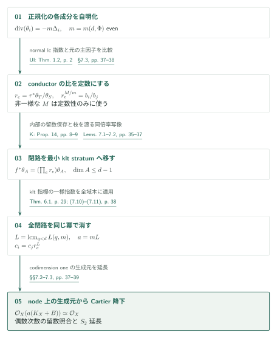
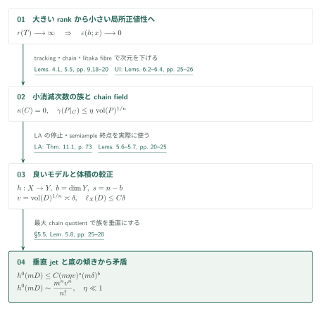
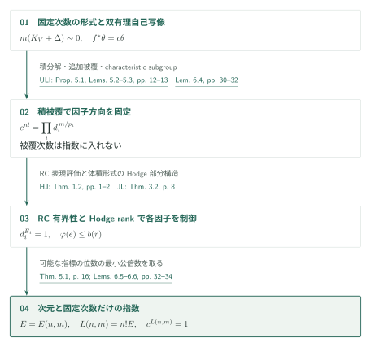

slc log Calabi–Yau対の一様指数――留数の閉路をklt指標で制御する
カタログ034・収録順02 / 内部ID: uniform-slc-indices
原典: OpenAI, Uniform indices for semi-log-canonical log Calabi–Yau pairs, 2026年10月5日版、42頁。固定版PDF。以下の頁はPDFの頁番号と一致する。これは原典の主張と証明構成を紹介するAI生成の概説であり、編集側の確認は末尾に限定して記す。数学的判断には原典を参照されたい。
Theorem 1.1：成分数によらないCartier自明化
\(d\geq4\)と有限集合\(\Phi\subset[0,1]\cap\mathbb Q\)を固定する。原典のTheorem 1.1、p.2は、これらだけに依存する整数\(a=a(d,\Phi)>0\)が存在し、標数零の任意の代数閉体上の連結・射影的・純\(d\)次元slc対\((X,B)\)で

正規化\(\nu:\coprod X_i\to X\)に対して \(K_{X_i}+\Delta_i=\nu^*(K_X+B)|_{X_i}\)と置く。\(\Delta_i\)にはconductorが係数1で加わる。UI Theorem 1.2、p.2によるnormal lc指数を用い、\(d,\Phi\)だけで定まる偶数\(m\)を選んで、各成分上に \(\operatorname{div}(\theta_i)=-m\Delta_i\)となる有理\(m\)-canonical形式を取る。これは正規化上の自明化であり、まだ\(X\)上の自明化ではない。
conductorのgeneric nodeを辺、正規化成分を頂点とする有限グラフを考える。辺\(e:i\to j\)の両枝の留数を\(\theta_S,\theta_T\)と書くと、枝の対応\(\tau\)による比 \(r_e=\tau^*\theta_T/\theta_S\)が現れる。ここで原典は、もともとの\(\mathbb Q\)-線形自明性から得られる非一様な主因子次数\(M\)（\(m\mid M\)）を一度使い、
次の接続が一様性の要点である。同一のdlt成分の最小lc strata間では、Kollár Theorem 10・Proposition 14、pp.6,8–9の\(\mathbb P^1\)-linkが留数を保つ。偶数\(m\)が符号を消す。他方、conductorを渡る写像については本稿Lemma 7.2が、同じ\(r_e\)を保つ最小strata間の\(B\)-双有理写像を作る。これは双有理写像をstratumへ単純に制限する操作ではない。共通SNCモデル上の局所単項式行列の行列式\(\pm1\)と留数体の比較を使う。Lemmas 7.1–7.2、pp.35–37
したがって任意の閉路に沿う積\(\prod_e r_e\)は、一つのklt最小stratum上の\(B\)-双有理自己写像の指標になる。後述のTheorem 6.1から
最後に節が降りるだけでは足りず、Cartier性を得る必要がある。split node \(F[[x,y]]/(xy)\)ではcanonical生成元の二枝が\((dx/x,-dy/y)\)となり、偶数次数で留数の一致が生成元の一致を与える。非split nodeは二次拡大後に照合して降下する。codimension oneで得た生成元を\(S_2\)性で延長して、次数\(a\)の反射的延長そのものを\(\mathcal O_X\)と同一視する。標数零の一般の代数閉体への移行は、有限生成体への降下と忠実平坦な基底変換を用いる。§7.2–§7.3、pp.37–39
Theorem 5.1：体積形式を含むHodge部分構造のrank
指標の次数を抑える入力は全Betti数の有界性ではない。滑らかな射影\(n\)-fold \(U\)について、\(T(U)\subset H^n(U,\mathbb Q)\)を\(H^{n,0}(U)\)を含む最小の有理Hodge部分構造、\(r(U)=\dim_{\mathbb Q}T(U)\)とする。Theorem 5.1、p.16の仮定は、\(n\geq2\)、\(T\)が複素射影\(\mathbb Q\)-factorial terminal \(n\)-fold、\(K_T\sim0\)、滑らかな解消\(U\)で\(h^1(U,\mathcal O_U)=0\)、かつ\(0<\dim Y<n\)を満たす任意の有理像\(Y\)の滑らかな射影解消がrationally connectedというものである。このとき\(r(T):=r(U)\leq R_n\)と主張する。

Lemma 4.1は、\(K\sim0\)のcanonicalモデルに対する、正規化したample類のSeshadri下界から\(r(T)\)の上界を与える対角線評価である。その前段に、primitive成分に対する定量的Hodge norm差を置く（Lemma 3.2）。rankが無制限なら局所正値性が小さくなり、UI Lemmas 6.2–6.4、pp.25–26のtracking・generic chain・Iitaka fibreの小体積評価を通して、完全線形系の消滅次数が小さい\(\kappa=0\)部分多様体の被覆族を得る。Lemma 5.5、pp.18–20
原典はこれらのchain fieldを小さいterminalモデル上の射として実現する。movable \(J\)から作る\((T,\epsilon J)\)にLA Theorem 11.1、p.73を適用し、MMPの停止とsemiample終点を使う。この箇所はLAの豊富性を実際に入力する。Lemma 5.6、pp.20–21。適切なchain quotientの次元を最大化し、有理像の仮定とUIのmoduli分母・有界性入力で底を制御する。さらに底のcodimension \(\geq2\)へ写る因子を処理し、Lemma 5.7でbigな\(D\)と線形汎関数\(\ell_X\)を較正する。\(v=\operatorname{vol}(D)^{1/n}\)、\(b=\dim Y\)、\(s=n-b\)として、その尺度は
小消滅次数の族は底の超平面との比較から垂直になり、最大性によってchain leafはgeneric fibreを埋める。垂直jet評価でgeneric rankを\(C(m\eta v)^s\)に抑え、底ではdeterminantとcotangentの傾きを用いて
Theorem 6.1：自己写像の位数ではなく、形式への指標を抑える
\(n\geq0,m\geq1\)に対し\(L(n,m)>0\)が存在し、複素射影的なintegral klt対\((V,\Delta)\)、\(\dim V=n\)、\(\Delta\geq0\)で、\(m(K_V+\Delta)\)が整主因子となるものを考える。\(\operatorname{div}(\theta)=-m\Delta\)を満たす有理\(m\)-canonical形式と任意の\(B\)-双有理自己写像\(f\)について

crepant terminal化の後、ULI Proposition 5.1・Lemmas 5.2–5.3、pp.12–13によるquasi-étale積被覆を用いる。境界を持つrationally connected因子、abelian因子、境界のないCalabi–Yau・symplectic因子に分かれ、境界は最初の因子だけから来る。Lemma 6.4は基本群のcharacteristic subgroupを用いて写像を被覆へ持ち上げ、接方向の分解を\(n!\)乗で固定する。被覆次数は一様でなくてよい。因子形式への倍率\(d_i\)、次数\(p_i\)を用いた比較は
RC因子はHan–Jiang Theorem 1.2、pp.1–2のfixed-index有界性を経て、Jiang–Liu Theorem 3.2、p.8の有界族におけるpluricanonical表現の評価に渡す。境界なしの非abelian因子ではUI Lemma 5.2、pp.21–22の有理像の性質を使い、Theorem 5.1を適用する。abelian因子には\(\binom{2r}{r}\)というcohomology rank上界がある。整係数のpolarized Hodge構造への作用を通じて、固有値の位数\(e\)に\(\varphi(e)\leq b(r)\)を課し、可能な\(e\)の最小公倍数を取る。これをRC因子の指数と合わせると\(L(n,m)=n!E(n,m)\)が得られる。Lemmas 6.5–6.6、pp.32–34
依存する結果と使用箇所
| 入力 | 本稿での役割 | 今回の照合 |
|---|---|---|
| UI Thm.1.2、p.2 | Thm.2.2、§7.3：normal lc成分の共通次数 | 入力の定理文・適用を照合 |
| UI Thm.1.1、Prop.4.1,4.5 | Prop.2.4：chain quotientの底の有界性 | 本稿の入力記述を読解。各証明は対象外 |
| UI Lem.6.2–6.4、pp.25–26 | Inputs 5.2–5.4、Lemma 5.5：generic chainと小体積 | 入力の定理文・使用箇所を照合 |
| LA Thm.11.1、p.73 | Thm.2.3、Lemma 5.6および§5.4：良いモデルの構成 | 入力の定理文・有理境界での適用を照合。証明は対象外 |
| ULI Prop.5.1, Lem.5.2–5.3、pp.12–13 | Input 6.3・Lemma 6.4：積分解と追加被覆での安定性 | 原典の記述・使用箇所を照合 |
| HJ Thm.1.2 と JL Thm.3.2 | Lemma 6.5：RC因子の指標 | 原典の定理文を照合。bounded varietyからlog bounded pairへの補助論法は本稿のみ |
| UI Lem.5.2、pp.21–22 | Lemma 6.6：非abelian因子にThm.5.1を適用 | 入力記述と適用を照合。ここにもLA非消滅への間接依存がある |
| K Thm.10, Prop.14 | Lemma 7.1：同一成分内の留数を保存する写像 | 原典の定理文・偶数次数の符号計算を照合 |
U4はUIの幾何補題の出所として本稿Inputs 5.2–5.4にも挙げられる。今回U4原典の該当補題は再照合していない。参考文献にあるだけの論文へ依存の矢印を追加しない。
原典・確認範囲
原稿commitはadc7f1241b42e322a6451854ab7e4b4c146bf78a、SHA-256は588f61707a03040f0265823b76aa32e17f238bfed772f79bdcd8f9867746a126。詳細は機械可読記録と作業記録に保存した。
編集側では主定理、§§2–3、§5のchain quotient・較正の主張・垂直水平jet比較、§6の因子別指標、§7の留数・閉路・node・\(S_2\)降下を読んだ。Lemma 4.1の対角線計算全体、Lemma 5.7の体積較正の全推定、基本群を使う持ち上げと局所valuation議論の完全な検算はしていない。Campana–Păun等の傾き入力、特異Beauville–Bogomolov分解の元論文、UI・LAの入力定理自体の証明は未検証である。これは引用・適用関係を追った初稿であり、定理の正しさの保証ではない。